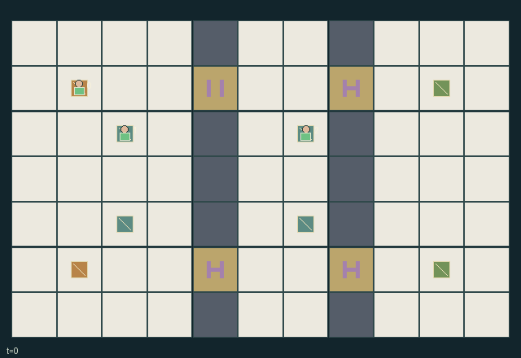

GI144 · Phase-Lock Relay

Deliver cargo 0 from (1,1) to (9,1) and cargo 1 from (1,5) to (9,5), using periodic gates and distributed local station commands.
Identity and original contract
3 independently actionable roles; 8 discrete commands per role; 148 native observation columns per role; original horizon 96 steps. Declared per-step reward range: -0.007 to 2.0. Observation regime: fully_observable.
Source SHA-256: 4269d24c4659c474d5734959cd66e5504a11a772055437cc79b399d6c41b5768
The objective, rewards, population, map and horizon remain original. A preview is not a success claim.
Objective and gameplay
Deliver cargo 0 from (1,1) to (9,1) and cargo 1 from (1,5) to (9,5), using periodic gates and distributed local station commands.
An operator on a remote station changes another role cargo entry opportunity through a gate on the same transition, then pays a forced-stationary commitment. Phase shifts persist and alter future schedules. Cargo can be dropped for another carrier.
- Deliver each numbered cargo to its same-numbered dock. Each player carries at most one cargo; Pick/Drop acts at the player actual cell.
- Walls divide the map at x=4 and x=7. Each partition has gates at y=1 and y=5; floor paths within chambers connect the two routes.
- Gates cycle through six phases and naturally open at phases 0 and 1. Gate state for a call is computed at t+1 before movement.
- Hold at a local station forces its gate open now and for two following calls, then leaves that operator with two forced Wait calls.
- Shift adds three to the gate persistent phase offset modulo six and forces the operator to Wait for one following call.
- Commands resolve before movement, so one player can open a gate for a moving teammate on the same call.
- Entering a closed gate fails. A player already on a gate may leave when it closes; closure neither crushes nor teleports.
- Other players old cells and contested destinations block movement. Swaps and following into a just-vacated cell are rejected.
- Each delivery gives every role one reward. Each active call costs 0.001, with another 0.005 for a Hold or Shift command. Both deliveries end play; horizon is 96.
Ending: Both cargo items are delivered; otherwise horizon 96 truncates. A matching delivery on the horizon retains natural-completion priority.
What this game explores
Commitment, exchange & governance: Promises consume time, liquidity, access or material. Separate an announced agreement from a binding commitment and from its eventual delivery; log cancellation and expiry too.
Joint transport & shared access: Positions, load geometry, occupancy and persistent access constrain whose action can succeed next. Distinguish physical handoff, shared controls and simultaneous force from a cosmetic cooperation label.
Team opposition & interception: Cooperation within a team can coexist with opposition between teams. Preserve team membership, capture and possession rules, and report each team's outcomes instead of assuming a single shared return.
These are questions supported by rule structure, not observed learning effects.
Play it: operating walkthrough
crucibles play --game gi144Keep Python running and open its printed address. Select this game, set a seed and press Create session. The game itself is always English.
Assign a role range to Host with Assign / take over, or Assign all roles. Invite a second participant with Create player invitation, then assign a disjoint subset. Every original role is available.
For every owned role choose a legal command and press Queue. Arrow keys / WASD queue a declared directional action for the current role camera when available. Space or Advance one joint step advances everyone together. Non-directional games use the selectors.
Unqueued roles use the labelled untrained uniform-legal policy. Take over or release roles before the next step without resetting. Full-state debug is privileged and permanently logged; role cameras preserve permissions. Close the session to retain logs. Server restart does not restore sessions.
Complete command reference
IDs and English labels exactly match the manifest. Availability depends on role, resources, location and phase. An available action can still have no productive effect.
0·Wait or serve operation commitment
1·Move north
2·Move east
3·Move south
4·Move west
5·Pick up or drop cargo at own cell
6·Hold local gate open; commit two future calls
7·Shift local gate phase by three; commit one future call
Roles and capability identifiers
These original role names describe capabilities, not interchangeable skins. Check each owned role's legal selector before planning handoffs.
agent_0·Courier or mobile switch operator
agent_1·West relay operator or courier
agent_2·East relay operator or courier
Information and observation permissions
Map, positions, cargo ownership, gate phase/open/override, station mapping, commitment clocks, dock delivery status and latest events are public. Each role also observes own identity; no hidden phase is exposed only to a renderer.
The GIF is full-state debug and may reveal hidden entities or private state. Train on obs[agent], not the picture, state tree or another role's private row. Field slices and visibility are in the original manifest.
Reinforcement-learning integration
import jax
from crucibles_jaxmarl import make
env = make("gi144")
key = jax.random.PRNGKey(0)
key, rk, ak, sk = jax.random.split(key, 4)
obs, state = jax.jit(env.reset)(rk)
actions = env.sample_actions(ak, state)
obs, state, rewards, dones, info = jax.jit(env.step_env)(sk, state, actions)
done = dones["__all__"]Observations are float32 vectors of width 148; actions are scalar int32; masks have 8 entries. Supply all 3 roles each transition. Masked sampling is an engineering reference, not a trained learner.
step_env retains terminal data without reset. step performs outer autoreset and keeps terminal data in info["raw_state"] and info["raw_observation"]. Use dones["__all__"] for episode boundaries; separate completion, failure and time limit in analysis.
JIT or vmap equal identities and shapes. Split independent reset, policy and transition keys. Group different shapes explicitly; do not shrink the population or horizon. Host rendering stays outside training.
Training questions and fair evaluation
Define valid completion from the objective before fitting. Preserve original rewards and also report real deliveries/services, losses, resource state, unresolved episodes and per-role returns. Animation is not a reward signal.
Promises consume time, liquidity, access or material. Separate an announced agreement from a binding commitment and from its eventual delivery; log cancellation and expiry too.
Positions, load geometry, occupancy and persistent access constrain whose action can succeed next. Distinguish physical handoff, shared controls and simultaneous force from a cosmetic cooperation label.
Cooperation within a team can coexist with opposition between teams. Preserve team membership, capture and possession rules, and report each team's outcomes instead of assuming a single shared return.
Compare memory, communication or centralized critics under matched actor information. Declare critic access; keep actor inputs role-filtered. Match partner/opponent distributions, masks, compute and checkpoint selection. Final tests never enter fitting or selection.
Independent training runs or source-pairing blocks are inferential units; episodes from one policy are not independent training replications. Save hashes, keys, versions, device, time and cost. Negative, zero, failed and indeterminate outcomes are valid. No trained checkpoint or target score is supplied.
Classification and evidence
Overlapping editorial labels are reading aids, not proof of novelty, difficulty, strategic equivalence or learning effects.
- Commitment, exchange & governance
- Evidence
manifest.actions.0: Wait or serve operation commitment
- Evidence
manifest.actions.6: Hold local gate open; commit two future calls
- Evidence
manifest.actions.7: Shift local gate phase by three; commit one future call
- Joint transport & shared access
- Evidence
manifest.task.objective: Deliver cargo 0 from (1,1) to (9,1) and cargo 1 from (1,5) to (9,5), using periodic gates and distributed local station commands.
- Evidence
manifest.actions.5: Pick up or drop cargo at own cell
- Evidence
manifest.actions.6: Hold local gate open; commit two future calls
- Team opposition & interception
- Evidence
scene.rules.7: Other players old cells and contested destinations block movement. Swaps and following into a just-vacated cell are rejected.
Source, receipts and preview limits
The world-only English GIF replays saved untrained legal actions through the original kernel. At most 25 actual endpoints include initial and terminal state; no invented interpolation. It is full-state debug, not the role observation.
Original source, observation slices, manifest and mechanism
Native receipt · Presentation receipt
Engineering passes do not establish learning. Nonzero floating differences remain recorded and undetermined; no new tolerance was introduced. Human scores remain unverified.